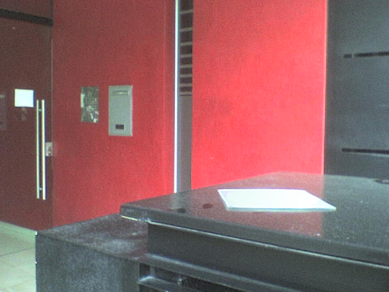
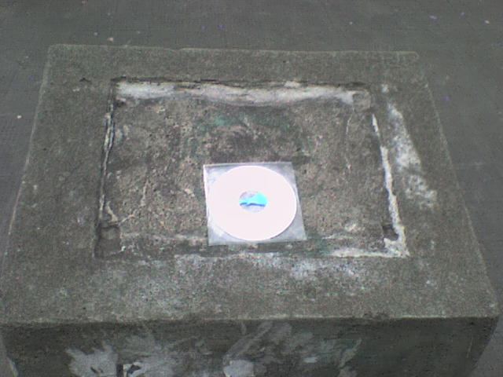
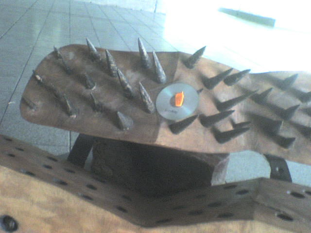
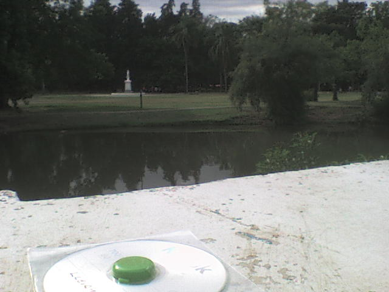
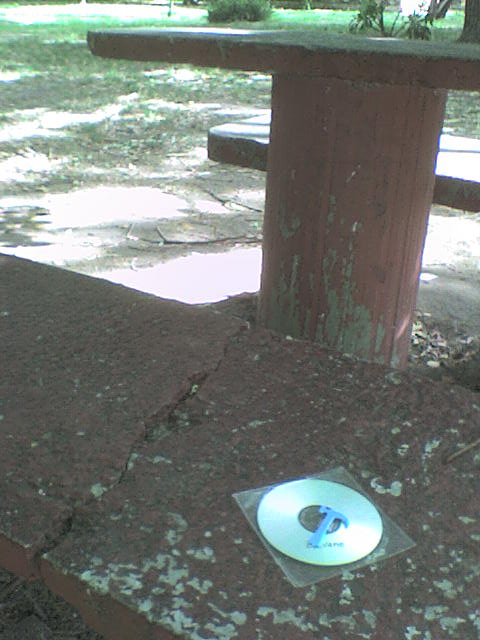

Sismo Trapisonda no es flor de un día, no señor. Casi cuatro meses después del primer número apareció misteriosamente, en veredas, calles, plazas, canteros, monumentos y edificios platenses, el número siguiente, al que (como era previsible, aunque quién sabe tratándose de una cosa tan rara, ¿no?) le asignamos el ordinal siguiente, es decir, segundo.
Los topos se habían sindicalizado, pero los convencimos mediante tortura.
Un ejemplar de Sismo Trapisonda vigilando celosamente a las autoridades.
El vecino que salió primero del edificio se habrá hecho de su ejemplar, a menos que estuviera muy dormido. Los domingos son... domingos.
Una revista que es un molumento, ¿no?
¿Saw VI? No, Sismo 2.
Parque Saavedra, intervenido.
Un cacho de cultura pal picnic.